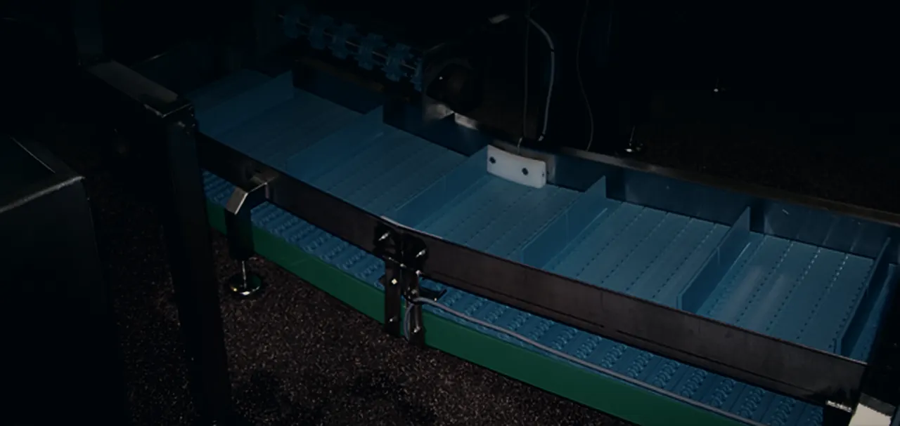
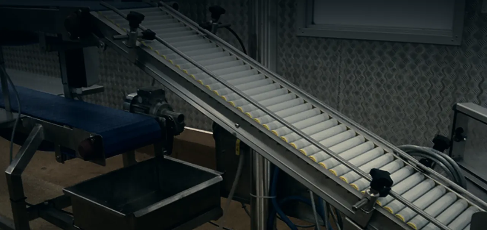
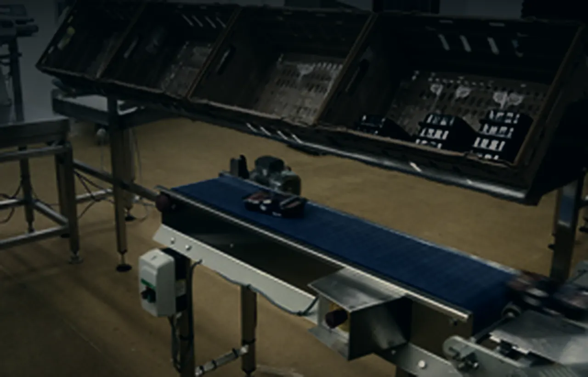
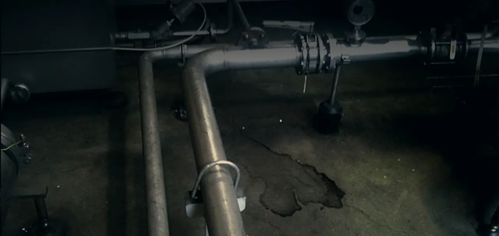
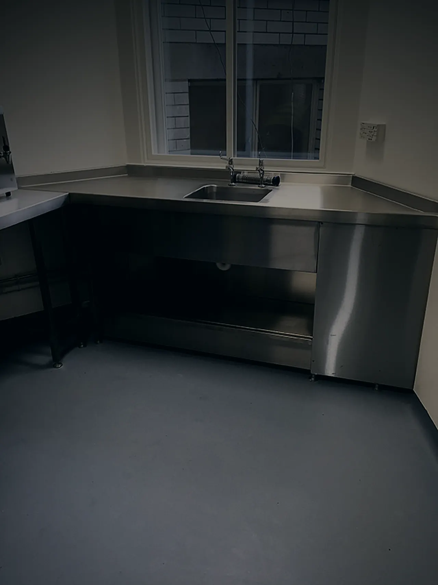
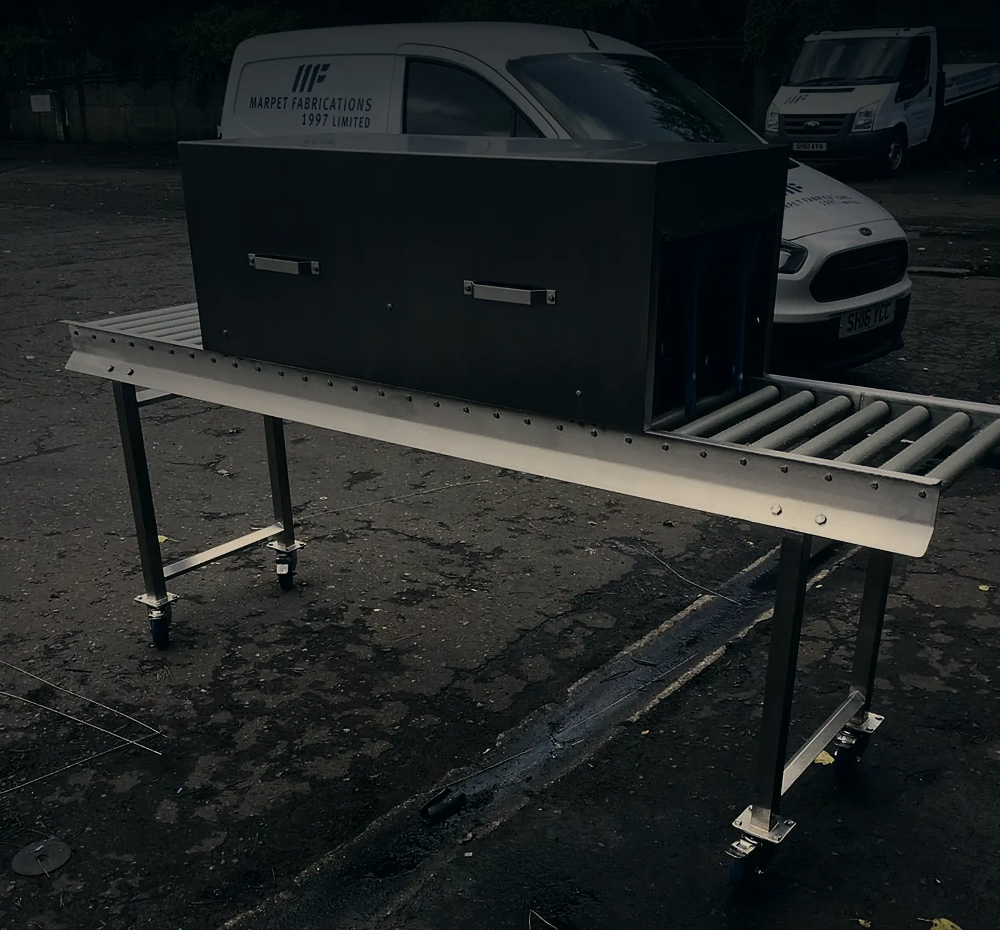

Home/Our work
Our work
Conveyors, production lines, pipework, platforms and stainless fit-outs, photographed in the workshop and on site.
Projects
11 projects shown
 Belt conveyor with side tablesConveyor systemsView project
Belt conveyor with side tablesConveyor systemsView project Pin conveyor lineConveyor systemsView project
Pin conveyor lineConveyor systemsView project
Curved modular belt conveyorConveyor systemsView project
Inclined roller and belt conveyorsConveyor systemsView project Biscuit line conveyorsProduction linesView project
Biscuit line conveyorsProduction linesView project
Crate handling lineProduction linesView project
Process pipeworkIndustrial pipeworkView project Access platform and stairsAccess platformsView project
Access platform and stairsAccess platformsView project
Stainless kitchen fit-outCatering fabricationView project
Roller table with enclosureGeneral fabricationView project Dental surgery cabinetsDentistry equipmentView project
Dental surgery cabinetsDentistry equipmentView project


Have a drawing or a line to fit out?
Tell us what you need made and where it is going. Marpet will come back to you.